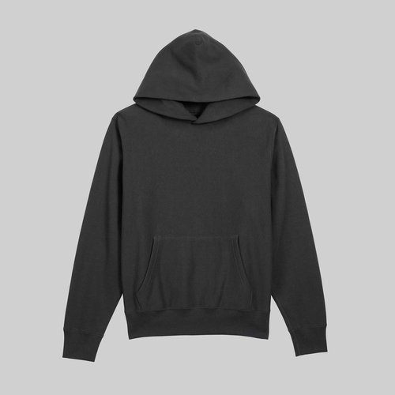
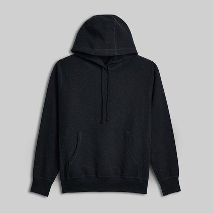
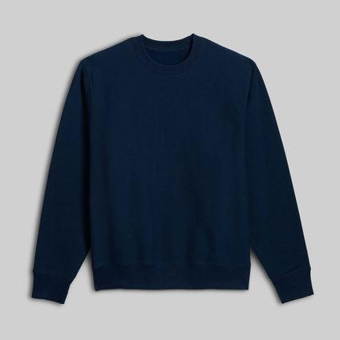
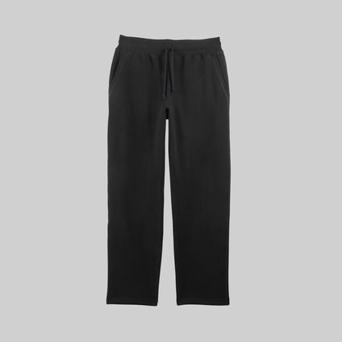
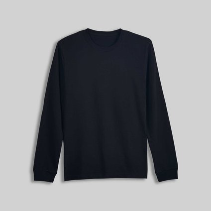

Made-in-Canada Hoodies for Men (2026)
As an Amazon Associate, SHEIN affiliate, and Moosehill and House of Blanks (Awin) affiliate, ThatFootball12 earns from qualifying purchases made through links on this site.

Updated November 2026
A hoodie is usually the piece he wears most from November to March, so it’s worth choosing one built for that kind of use. These five heavyweight basics from House of Blanks are all listed as made in Canada: two hoodies, a crewneck, a pair of sweatpants and a long sleeve tee.
House of Blanks is the factory brand of Roopa Knitting Mills, so the company behind the fabric is also behind the finished piece. The fabric is Canadian milled, and it’s heavy: the fleece here is 400 GSM. There’s nothing printed on the front, which also makes these an easy Christmas gift. You don’t have to guess his team or his taste, only his size.
Living in Canada, we know how cold it gets, and not just in winter. Fall can be just as raw, so cool weather really lasts up to half the year. A heavy hoodie that holds its shape matters, and I like that these are made here in Canada.
We checked these listings on the House of Blanks site on November 6th, 2026, so the specs below match what was there then.
At a glance
| Piece | Best for | Fabric | Fit |
|---|---|---|---|
| 3013 Relaxed Fit Hoodie | A roomier everyday hoodie | 400 GSM cotton fleece | Relaxed, spacious hood |
| 3008 Pullover Hoodie | A classic hoodie | 400 GSM cotton fleece | True to size |
| 4009 Relaxed Fit Crewneck | Layering under a jacket | 400 GSM cotton fleece | Relaxed |
| 7013 Straight Leg Sweatpant | Matching a hoodie or crewneck | 400 GSM cotton fleece | Open, straight leg |
| 1011 Heavyweight L/S Tee | A base layer | 275 GSM cotton jersey | Traditional |
The hoodies
1. House of Blanks 3013 Relaxed Fit Fleece Hooded Sweatshirt
This one is cut for room. It’s 400 GSM cotton fleece with a matching 400 GSM rib, a spacious hood and a relaxed silhouette. The cotton is American grown, and the fabric is milled and the hoodie made in Canada. It’s shown here in Off Black.
Best for: the guy who likes a roomier hoodie for every day.
House of Blanks 3013 Relaxed Fit Fleece Hooded Sweatshirt
Shop House of BlanksHouse of Blanks 3013 Relaxed Fit Fleece Hooded SweatshirtDetails2. House of Blanks 3008 Pullover Hooded Sweatshirt
The more traditional of the two. It uses the same weight of fleece, a cross-grain cut with a 400 GSM rib and flatlock seams, and House of Blanks says it fits true to size. The brand also says the fabric softens when washed. It’s shown here in Black Speckle, a black with small flecks of colour through it.
Best for: the guy who wants a classic hoodie that fits the way he expects.

House of Blanks 3008 Pullover Hooded Sweatshirt
Shop House of BlanksHouse of Blanks 3008 Pullover Hooded SweatshirtDetailsThe rest of the set
3. House of Blanks 4009 Relaxed Fit Fleece Crewneck
The same 400 GSM fleece without the hood, which makes it the easiest of the five to wear under a jacket. It has a hardwearing face and a soft interior, with a relaxed fit. The cotton is grown in the USA, and the fabric is Canadian milled. It’s shown here in navy.
Best for: the guy who layers under a jacket and doesn’t want a hood in the way.

House of Blanks 4009 Relaxed Fit Fleece Crewneck
Shop House of BlanksHouse of Blanks 4009 Relaxed Fit Fleece CrewneckDetails4. House of Blanks 7013 Straight Leg Sweatpant
Heavyweight sweats in the same 400 GSM cross-grain fleece, with an open straight leg rather than a cuffed ankle and a ribbed elastic waistband. The straight leg sits cleanly over a boot or sneaker. Either hoodie pairs with them for a set in the same weight of fleece.
Best for: the guy who wants a matching set, or sweats that don’t look like gym wear.

House of Blanks 7013 Straight Leg Sweatpant
Shop House of BlanksHouse of Blanks 7013 Straight Leg SweatpantDetails5. House of Blanks 1011 Heavyweight L/S T-Shirt
This is the lightest of the five: 275 GSM combed cotton jersey with a 300 GSM rib, milled and made in Canada. House of Blanks positions it as the option for warmer weather, so in a Canadian winter it’s a layer rather than the warm piece. It’s shown here in Black.
Best for: the guy who wants a solid base layer under a hoodie or crewneck.

House of Blanks 1011 Heavyweight L/S T-Shirt (Black)
Shop House of BlanksHouse of Blanks 1011 Heavyweight L/S T-Shirt (Black)DetailsHow to layer them for winter
Fleece this heavy does a lot of the work, but it isn’t a winter coat. Start with the long sleeve tee, add a hoodie or the crewneck, then put a shell over it that has room for the fleece. Three pieces from our November outfits work well with them:
- Manfinity Homme Black Winter Hooded Padded Coat (SHEIN): a black padded coat with an attached hood and a zip front, for the coldest days.
- Levi’s Corduroy Sherpa Lined Trucker Jacket (Amazon): a navy corduroy jacket with a sherpa lining and collar, which pairs well with the crewneck.
- Kamik Forester Snow Boot (Amazon): a warm black winter boot that the 7013’s straight leg can sit over.
Only the House of Blanks pieces in this post are listed as made in Canada. The coat, jacket and boots are here for warmth.
My go-to for a hockey game: a long sleeve tee under a hoodie, a nice pair of jeans and boots. It’s warm enough for the stands, and the hoodie still looks put together once you’re inside. And if you have a jersey, it usually goes over top to complete the look.
Sizing and care
All five come in XS to XXL, and each listing has a size guide in centimetres. If you’re buying a gift, measure a hoodie he already wears and compare it with the guide.
- 3013 hoodie: the listing has no sizing note, so go by the size guide and keep in mind that it’s cut relaxed.
- 3008 hoodie: fits true to size. If he’s between sizes or likes a looser fit, size up.
- 4009 crewneck: relaxed fit. Pick his usual size, or size up for an oversized look.
- 7013 sweatpant: the listing has no sizing note, so go by the size guide.
- 1011 tee: the model is 6’1” and 175 lb and wears an XL.
The listings don’t give care instructions, so follow the label inside each piece. As a general rule for heavy cotton, wash it cold and inside out, then hang it to dry or use low heat, since cotton can shrink in a hot dryer.
If you’re buying for someone else and you’re stuck between two sizes, go up. Nobody’s ever really complained that a hoodie was too roomy, and the 14-day return window doesn’t leave much room for exchanges.
More gift ideas
If you’re shopping for Christmas and want to see more options, the gift guide has picks split by budget.
FAQ
Are House of Blanks hoodies really made in Canada?
All five pieces here are listed as made in Canada on the House of Blanks site, with Canadian-milled fabric. That doesn’t mean every input is Canadian: the listings for the 3013 hoodie and 4009 crewneck say the cotton is grown in the USA.
What does 400 GSM mean?
GSM stands for grams per square metre, a measure of how heavy a fabric is. A higher number means a heavier fabric. The hoodies, crewneck and sweatpants here are 400 GSM fleece, while the long sleeve tee is a lighter 275 GSM jersey.
Which one should I get if I can only pick one?
For a gift, the 3008 hoodie is the safest choice, since it fits true to size. If he likes more room, go for the 3013. If he usually wears a jacket over everything, go for the 4009 crewneck.
Can he return it if it doesn’t fit?
House of Blanks’ returns page says items must be returned within 14 days of delivery, in new and unused condition, and worn or washed items aren’t refunded. That window can close before Christmas morning if you order early, so check the current policy on the site before you buy, and keep the tags on until he’s tried it.